Quantum Computing Researcher – FIU
Worked on advanced quantum computing research focusing on Qiskit, pulse shaping, and hybrid workflows.

Teaching Intern – Miami-Dade County Public Schools
Taught Computational Thinking and Python to a class of 21 students through INIT Ignite’s outreach program.
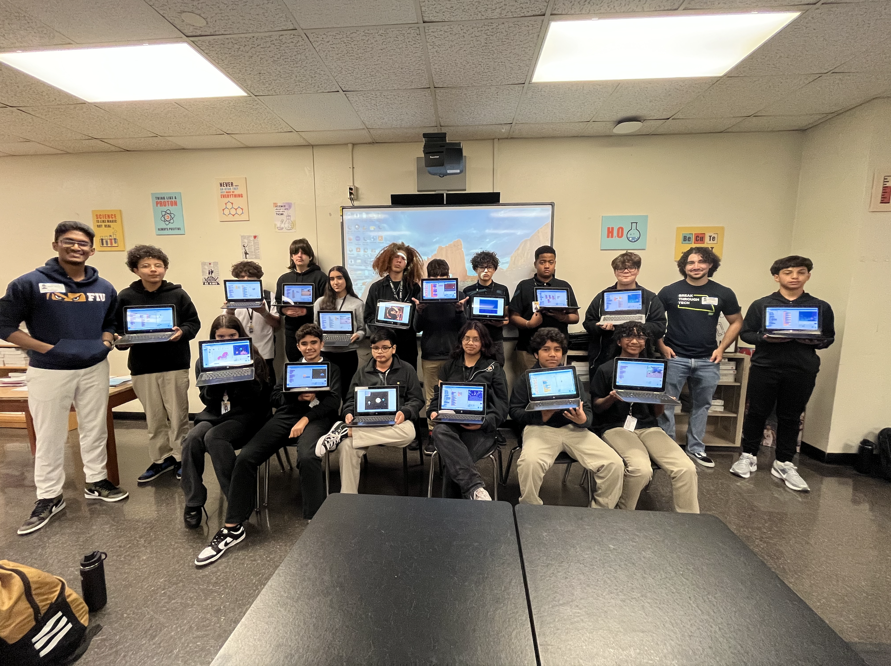
Team Lead – INIT FIU (Web Development)
Led a 15-member team to build a full-stack virtual marketplace for FIU using MERN stack and CI tools.
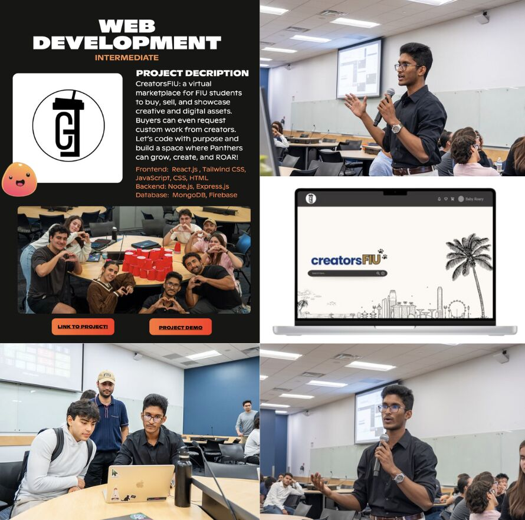
YourBigYear Fellow
As a Your Big Year Fellow, I participated in an intensive leadership and professional development program focused on global citizenship, networking, and social impact.
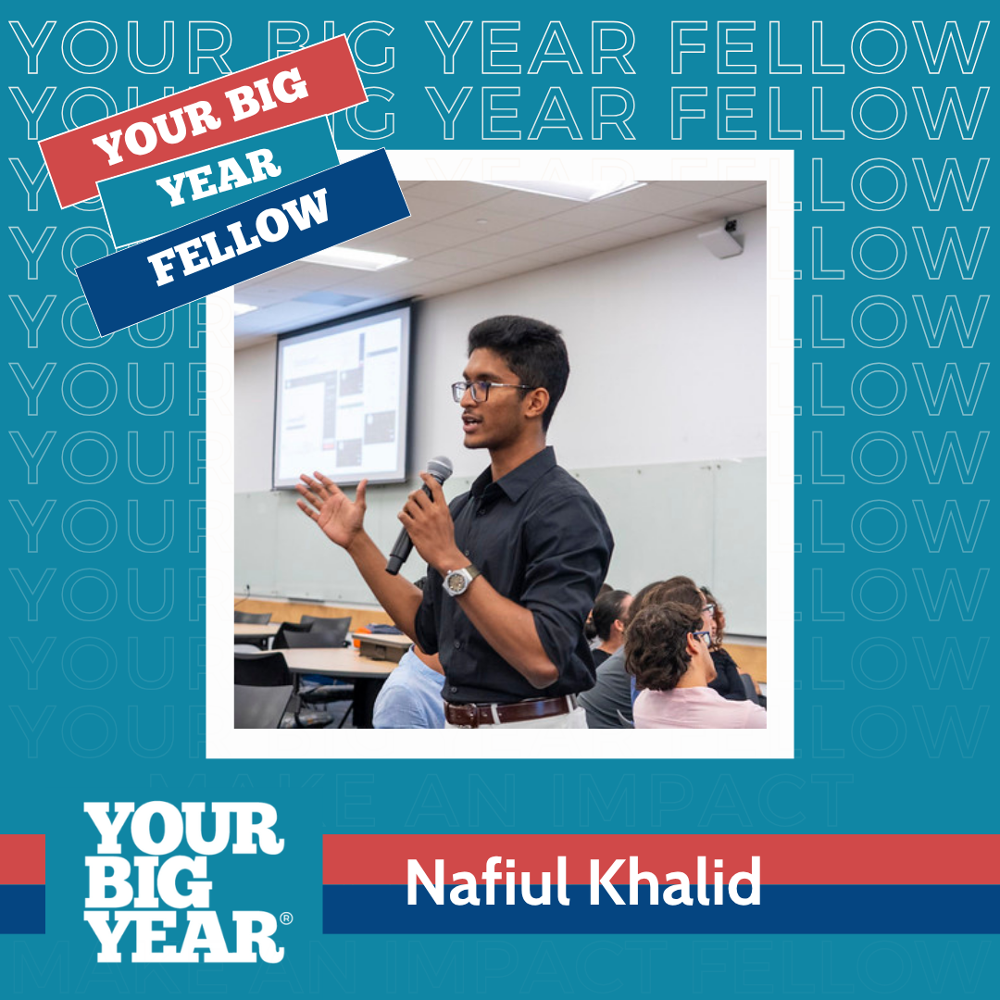
Peer Mentor – CodePath
Served as a Peer Mentor at CodePath, guiding students through technical interview preparation and coding best practices.
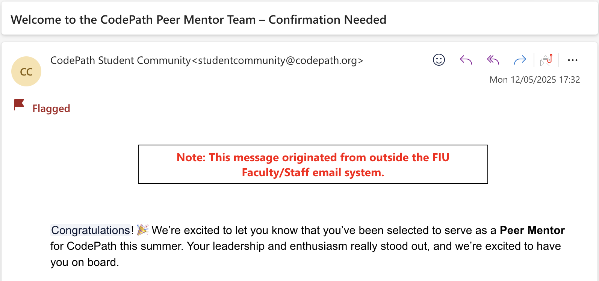
IBM Z Student Ambassador (Tier 2)
Organized workshops, mentored peers, and advocated for IBM Z mainframe technologies on campus.
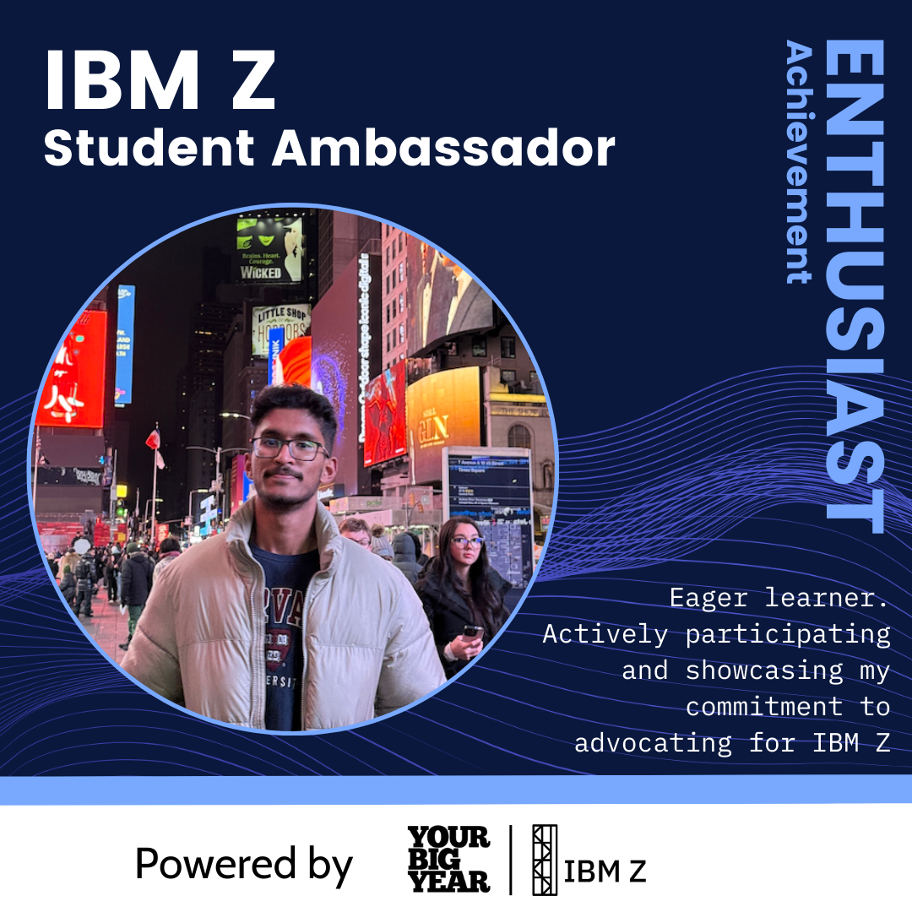
IBM Z Student Ambassador (Tier 1)
Promoted IBM Z technologies, engaged students through learning initiatives, and strengthened technical skills in enterprise computing.
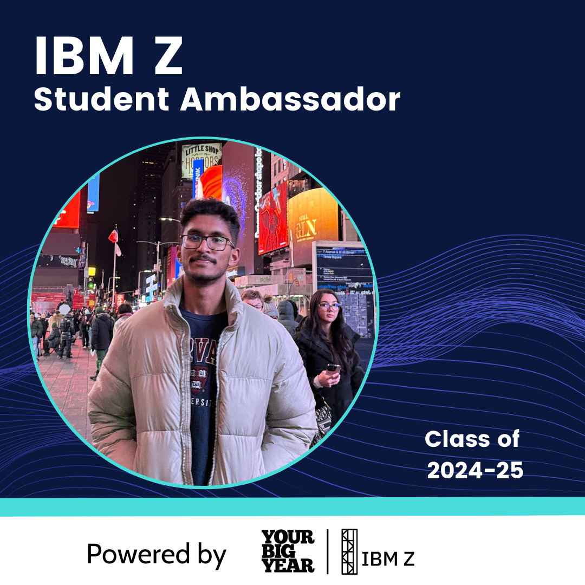
Policy Researcher – Future of Florida Summit
Drafted a policy proposal on AI and privacy in period tracking apps, earning 3rd place among 10 teams.
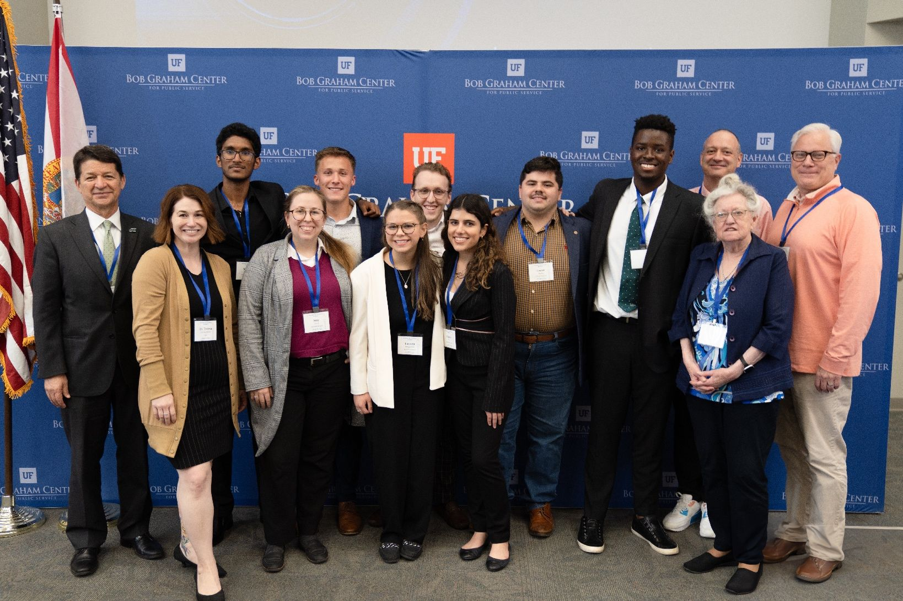
Student Research Assistant – University of Dhaka
Assisted in research methodology, thematic analysis, and report writing for ongoing academic projects.
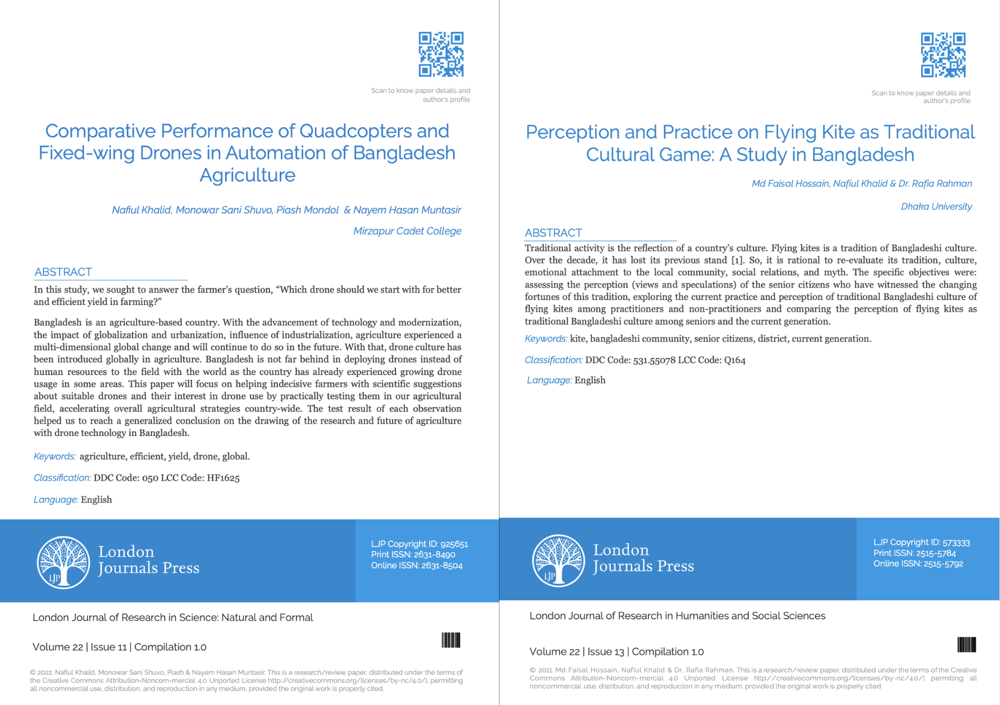
Front Desk Staff – FIU
Provided administrative and customer service support at Florida International University’s front desk.
Staff Reporter – PantherNOW
Wrote news articles and contributed to the student-run voice of Florida International University.
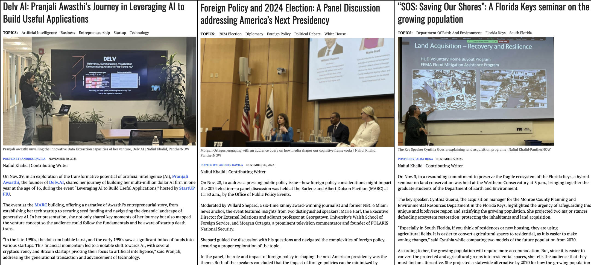
Orientation Assistant – Shorelight
Guided international students through FIU’s Global First Year program, ensuring smooth onboarding and support.
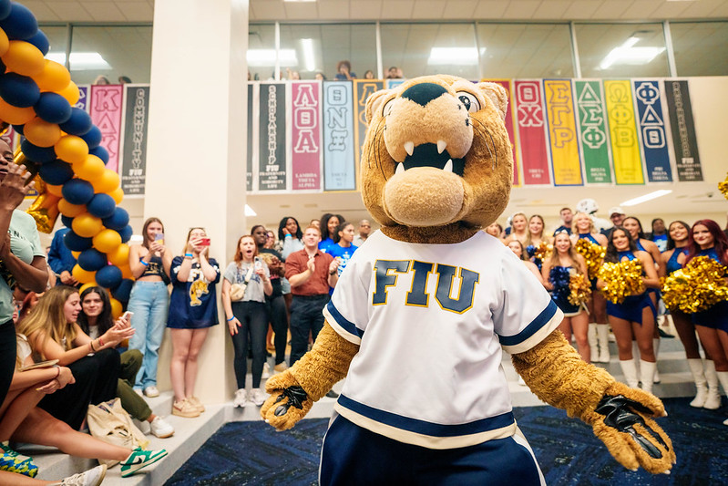
Military Student – Mirzapur Cadet College
Trained under military supervision, developing leadership, discipline, and responsibility over six years.
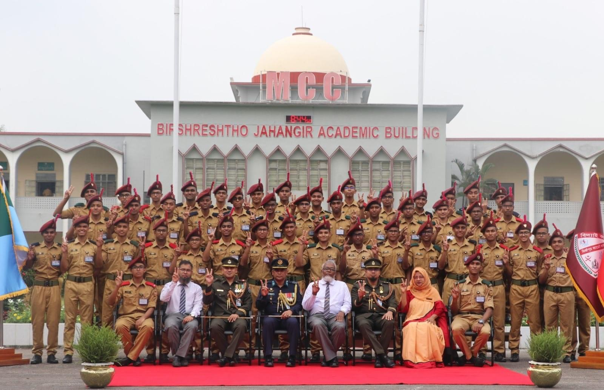